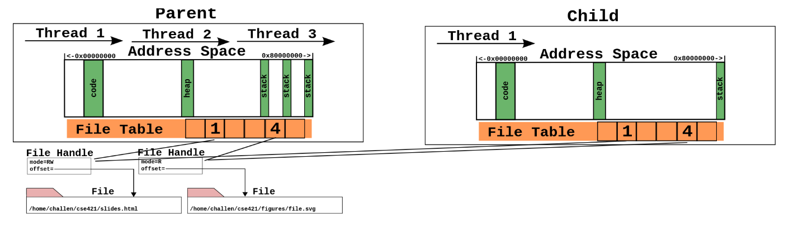

pstree у терминалу.
Primeri/01_pid)getpid().getppid().pid_t.<unistd.h>.fork())fork() системски позив нам омогућује да тренутни процес дуплирамо.fork()fork())
https://ops-class.org/slides/2017-02-10-forksynch/
Primeri/02_fork)fork() системски позив, након припреме новог процеса, имамо 2 процеса који настављају да извршавају код од линије где је позван fork() па надаље.fork().shm фамилије системских позива.shmget())<sys/shm.h>.shmget() прима 3 параметра:
IPC_PRIVATE као сигнал да нам треба нов сегментshmget() ће поравнати ову меморију па се може десити да добијемо више)shmget())shmget() прима 3 параметра:
IPC_CREAT|0660 где нам прва опција наглашава да нам треба стварање новог сегмента а друга опција регулише дозволе приступа (читај/пиши за власника тренутног процеса и његову групу а ништа за остале)shmat())<sys/shm.h>.shmat() прима 3 параметра:
void*; мора се кастовати у одговарајући тип).shmdt())<sys/shm.h>.shmdt() прима 1 параметар:
shmat() позиваshmctl())<sys/shm.h>.shmctl() прима 3 параметра:
IPC_RMID)shmid_ds која ће прихватити информације о сегменту (у нашем случају можемо игнорисати и послати nullptr)wait(), Primer/03_fork_sa_shm)<sys/shm.h>.wait().nullptrclone())clone().void*)Primeri/04_clone)CLONE_VM - нов процес користи исти меморијски простор као родитељSIGCHLD - омогућење детету да пошаље сигнал родитељу након терминације (неопходно да би радило чекање на дечји процес)pipe())pipe().pipe())<unistd.h>.pipe() прима 1 параметар:
pipe())Primeri/05_fork_sa_pipe)execv())execv(), Primeri/06_execv)<unistd.h>.nullptr показивачем као сигналом прекида низаps ax | grep firefoxps (списак свих процеса) шаље директно као улаз у grep програм који ће одбацити линије које не садрже реч "firefox".dup2())exec позиви, подвојити процес (fork())exec, треба преусмерити стандардни излаз на ток (користећи се dup2 позивом)dup2(), Primeri/07_execv_sa_pipe)dup2() се користи за дуплирање дескриптора тока.<unistd.h>.stdout)